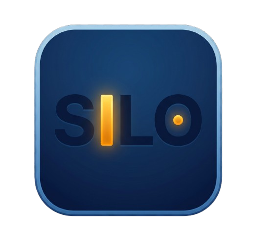

SiloSilo creates single-purpose environments on your phone—whether you're filming content, reading a book, driving, or getting deep work done. When you're finished, drop back to your normal setup in one tap.
We built Silo with a dedicated Exit Launcher button and Quick Settings toggle. It doesn't force you to abandon your custom launcher—it acts like stepping into a clean workspace room when it's time to focus.
Silo Launcher is completely open-source. The entire codebase, build pipelines, and privacy mechanisms are available for anyone to inspect, audit, or contribute to on GitHub.
Pick a mode for what you're doing right now. Any mode can be configured as your default boot mode.
Built for creators who need to shoot, edit, and post without getting sucked into notifications mid-workflow.
Turns your phone into a warm, low-friction e-ink reader with a Living Bookshelf, reading metrics, and zero doomscrolling triggers.
Clean text-only app launcher with tactile widgets (like physical rope pulling physics) to keep restless hands busy without leaving focus.
Oversized touch targets for Maps, Music, and Speed Dial so you can operate safely without hunting through app drawers while driving.
Ultra-dim grayscale layout showing only your alarm, sleep tracker, and meditation tools before heading to bed.
Experimental floating mode controller that hands UI control back to your base launcher while letting you pop into a Silo at any moment.
Designed around real phone habits.
Switch modes instantly from your Android Quick Settings shade without digging through menus.
Built-in haptic fidget tools designed to satisfy phone fidgeting without opening distracting feeds.
No ad networks, no data collection, no telemetry. Full source code accessible on GitHub.